| Pieza | N | Ventana |
|---|---|---|
| Prensa | 917.765 | 2015–2026 |
| Discursos Kast | 145 | 11 mar – 30 jul 2026 |
| Votaciones | 5.906 | hasta 17-ago-2026 |
| Votos | 790.317 | las mismas |
| Mapa de votos 2026 | 154 | período 2026 |
| Proyectos | 612 | ingreso |
Fondecyt · Derechas
Informe de datos: Fondecyt Derechas
Proyecto: Neo-Gremialismo
Gobierno Kast · hipótesis, votos, discursos y prensa
2026-08-17
Pregunta
Qué se está contrastando
El neogremialismo no es solo “votar a la derecha”. Es si el gobierno Kast articula mercado + orden/valores, absorbe o no repertorios radicales, se distingue del PNL en el hemiciclo y omite cuerpos intermedios en la agenda formal.
Eso se mide con un diccionario de repertorios A–D (siguiente lámina) y cuatro hipótesis.
| Pista | Pregunta | Fuente |
|---|---|---|
| Mapa de votos | ¿Con quién votan? ¿Se mantienen o se salen? | Solo sí/no de la Cámara; sin etiquetas ni IA |
| Boletines | ¿Qué presentó Kast (-05)? ¿Qué está promulgado? ¿Cuánto varía el voto? |
Cámara + BCN |
| Discursos | ¿Qué nombra Kast? ¿A quién alude? | Presidencia, cuerpo oral |
| Prensa | ¿Qué se dice cuando se nombra a la derecha? | 2015–2026 + repertorios A–D |
Repertorios A–D (antes de las hipótesis)
Cuatro familias. A, C y D son sacos de vocabulario. B no: es la articulación (qué se junta en la misma pieza). No son partidos.
| Nombre | En una frase | |
|---|---|---|
| A | Gremialista clásico | Mercado con orden, familia y cuerpos intermedios |
| B | Articulación neogremialista | A junto: economía libre + familia/orden → eso es H1 |
| C | Derecha radical | Seguridad permanente, migración, guerra cultural, anti-élite |
| D | Libertario puro | Individuo vs. Estado, sin gremios ni subsidiariedad |
Desde acá: A = gremialista · B = A articulado · C = radical · D = libertario.
Códigos (el saco de cada letra)
| Familia | Código | Nombre |
|---|---|---|
| A gremialista | A1 · A2 · A3 · A4 · A5 | cuerpos intermedios · orden · familia/moral · antiestatismo · economía libre |
| B articulación | no hay B1… | se mide como co-ocurrencia: A5+A3, A5+A2 |
| C radical | C1 · C2 · C3 · C4 · C5 | securitización · migración · guerra cultural · anti-élite · civilización |
| D libertario | D1 | Estado mínimo, PNL |
Regla: no cuenta la palabra suelta; cuenta qué se junta. Guía: A5+A3/A2 → H1 (B) · A5+C → H2 híbrido · C sin A → radical puro · A5 sin A1 → H4.
Cuatro hipótesis
Con ese alfabeto:
| Hipótesis | Se sostiene si… | Se refuta si… | |
|---|---|---|---|
| H1 | Racionalidad normativa: mercado con orden/familia (B) | Co-ocurren A5 + A2/A3 | El discurso es solo técnico (LyD) o solo libertario (D) |
| H2 | Radicalización: núcleo gremialista (A) + radical (C) | C aparece junto a A, no en su lugar | C reemplaza a A, o solo vive en redes |
| H3 | REP ≠ PNL en votos | Divergencia por materia (Rice, acuerdo) | Votan siempre igual |
| H4 | Selección liberal-individual | Agenda -05 sin A1 (cuerpos intermedios) |
Hay iniciativas comunitaristas sistemáticas |
Datos
Qué hay
Una prensa. 145 discursos de gobierno (el scrape tiene 248, con Boric). Sin redes; votos hasta el 17-ago-2026.
Prensa, por año
| Año | Notas | Año | Notas |
|---|---|---|---|
| 2015 | 75.972 | 2021 | 81.813 |
| 2016 | 77.746 | 2022 | 80.734 |
| 2017 | 72.816 | 2023 | 80.385 |
| 2018 | 76.931 | 2024 | 114.605 |
| 2019 | 80.663 | 2025 | 53.907 |
| 2020 | 83.572 | 2026 | 38.621 |
2024 115 mil · 2025 54 mil · 2026 39 mil. La baja no es “menos política”: es cobertura.
Tendencia: volumen
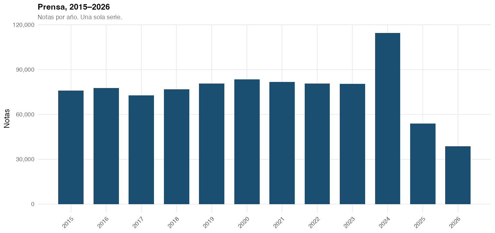
Notas por año
Serie única, 2015–2026. Pico 2024; 2025–26 el recorte es más chico.
Tendencia: Kast vs Kaiser
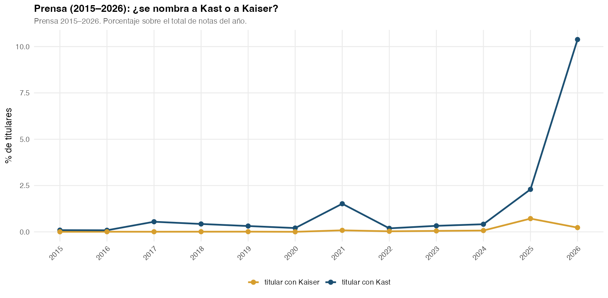
% de titulares
2021 y 2025 son años de campaña. En 2026 Kast está en 1 de cada 10 titulares; Kaiser, que había picado en 2025 (0,72 %), baja a 0,23 %.
El mapa de los votos
¿Cómo se captura la tendencia de derecha?
No está en los datos. Nadie etiqueta “este diputado es de derecha”. Entra solo la planilla: a favor / en contra / abstención. (B-Call, Toro-Maureira et al. 2025.)
- En cada votación mira quién votó con quién. La sala se parte en dos bandos.
- A cada diputado, voto a voto: ¿cayó del mismo lado que ese bando, o del otro?
- Con cientos de cortes aparece un eje (quienes coinciden vs. quienes se oponen). Todavía no tiene izquierda ni derecha.
- José Carlos Meza (Republicanos) solo gira el mapa, como poner el norte arriba: el polo donde suele caer Meza queda a la derecha. No lo usa de juez ni de ranking.
- El promedio de esas caídas → izquierda a derecha. Cuánto varía ese promedio → abajo hacia arriba (se mantiene o se sale).
| En el gráfico | Qué está viendo |
|---|---|
| ← → | Con quién suele votar (tendencia). |
| ↓ ↑ | Si ese patrón es estable o a veces se rompe. |
Toda la Cámara, 2026
Cada punto es un diputado. El lugar lo ganó votando, no por etiqueta de partido.
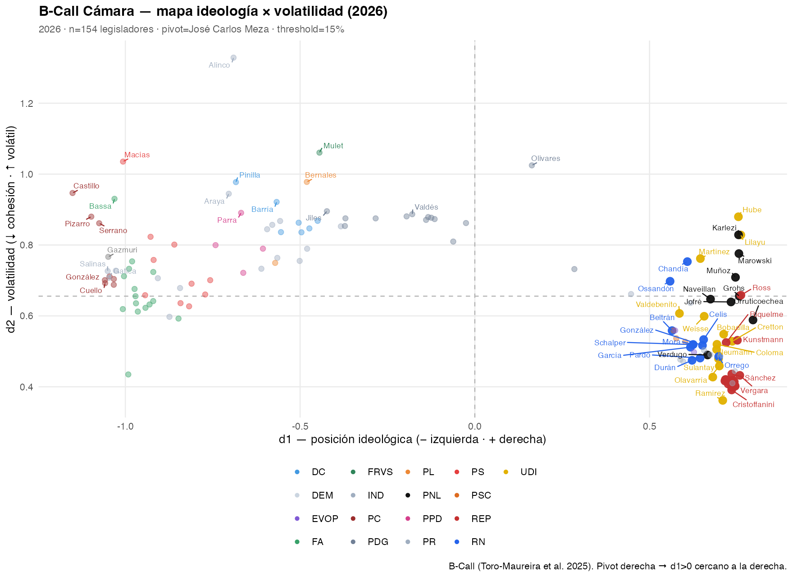
Mapa 2026: dos nubes (izquierda / derecha); el bloque de Kast está a la derecha
La pregunta era si Republicanos y el Partido Nacional Libertario son dos derechas. En el mapa no: es una nube. Lo que cambia es quién se estira hacia arriba (vota menos parejo).
Zoom: solo el bloque de Kast
Misma lectura: a la derecha = votan con el oficialismo; hacia arriba = se salen de su propio patrón.
Colores: Republicanos rojo · UDI amarillo · RN azul · PNL negro.
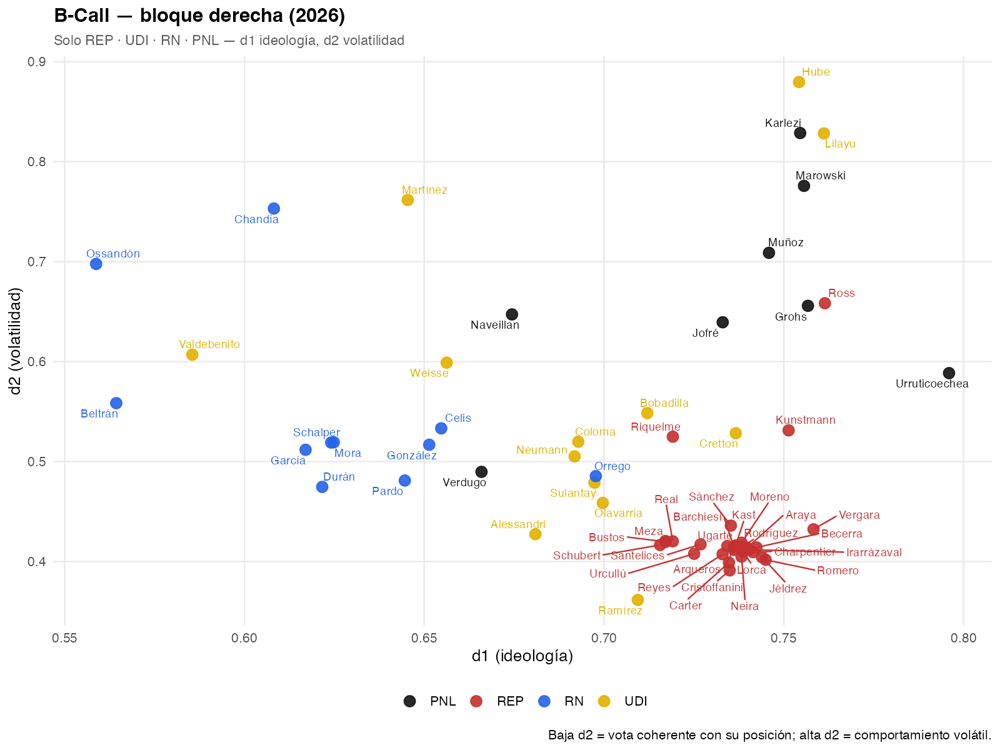
El núcleo rojo (Republicanos) es un punto denso; UDI, RN y libertarios se estiran hacia arriba
Entre partidos: Republicanos casi no se mueven. Renovación Nacional queda más al centro. Los libertarios tan a la derecha como Republicanos, pero más inconstantes. La UDI es la que más se abre hacia arriba.
Números: ¿se parecen los partidos?
| Partido | Diputados | Qué tan a la derecha | Qué tan inconstantes |
|---|---|---|---|
| PNL | 8 | 0.74 | 0.67 |
| REP | 28 | 0.74 | 0.43 |
| UDI | 13 | 0.69 | 0.58 |
| RN | 11 | 0.62 | 0.55 |
Más a la derecha no distingue a libertarios de Republicanos. Los distingue quién se sale (libertarios y UDI) y RN, más al centro.
Dentro de cada partido: los tres que más se salen
| partido | Partido | Diputado | A la derecha | Se sale |
|---|---|---|---|---|
| PNL | PNL | Pier Karlezi | 0.75 | 0.83 |
| PNL | PNL | Hans Marowski | 0.76 | 0.78 |
| PNL | PNL | Paulina Muñoz | 0.75 | 0.71 |
| REP | REP | Felipe Ross | 0.76 | 0.66 |
| REP | REP | Leandro Kunstmann | 0.75 | 0.53 |
| REP | REP | Alejandro Riquelme | 0.72 | 0.52 |
| RN | RN | Carlos Chandía | 0.61 | 0.75 |
| RN | RN | Ximena Ossandón | 0.56 | 0.70 |
| RN | RN | Juan Carlos Beltrán | 0.56 | 0.56 |
| UDI | UDI | Constanza Hube | 0.75 | 0.88 |
| UDI | UDI | Daniel Lilayu | 0.76 | 0.83 |
| UDI | UDI | Cristóbal Martínez | 0.65 | 0.76 |
Estos nombres no los elegimos: son, en cada partido, los tres que más rompen su propio patrón de voto.
- UDI: Hube, Lilayu, Martínez — los que más se salen de todo el bloque.
- Libertarios: Karlezi, Marowski, Muñoz — se sale la bancada, no solo Kaiser.
- Republicanos: Ross (el único que se despega); el resto vota pegado a Kast/Meza.
- RN: Ossandón, Chandía, Beltrán — más al centro que inconstantes.
Quién se sale más
Más alto = a veces vota en contra de lo que el resto de su zona votaría.
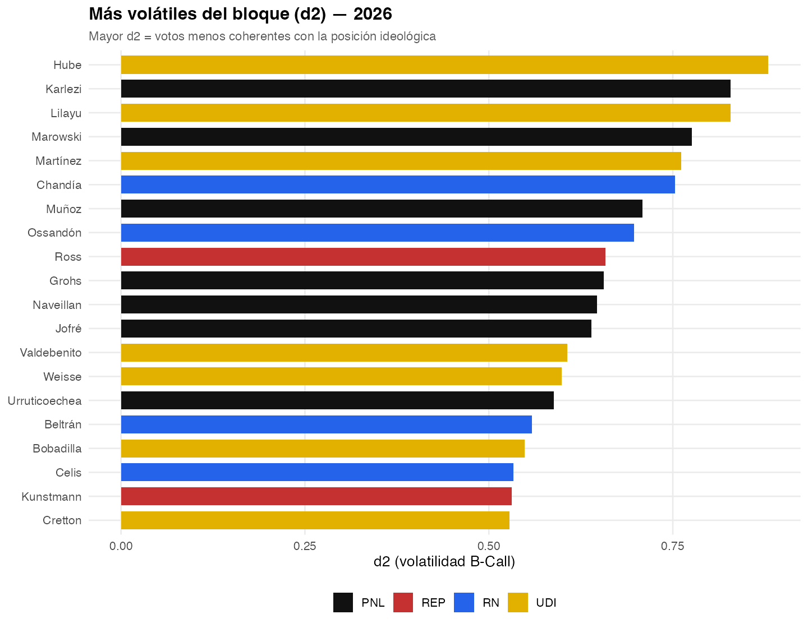
Quién se sale más de su propio patrón de voto
Si Republicanos y libertarios fueran doctrinas distintas, habría dos nubes de izquierda a derecha. Hay una nube y una cola de nombres hacia arriba.
El ancho de cada diputado
Cada curva es una persona. El centro dice con quién vota; el ancho dice si se mantiene o se mueve.
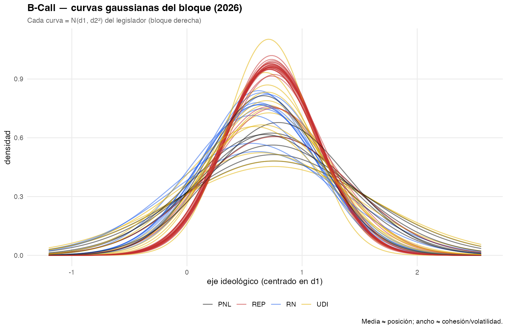
Centro = con quién vota; ancho = cuánto se sale
Curvas angostas y pegadas (Republicanos) = votan juntos y siempre igual. Curvas anchas (UDI y libertarios) = el mismo diputado a veces vota como si no estuviera en su sitio.
Cómo se arma el mapa (GIF)
No es un ranking que dibujemos a mano cada mes. Cada fotograma rehace el mapa con los votos acumulados desde el 11 de marzo de 2026. El punto se mueve porque cambió cómo ha votado.
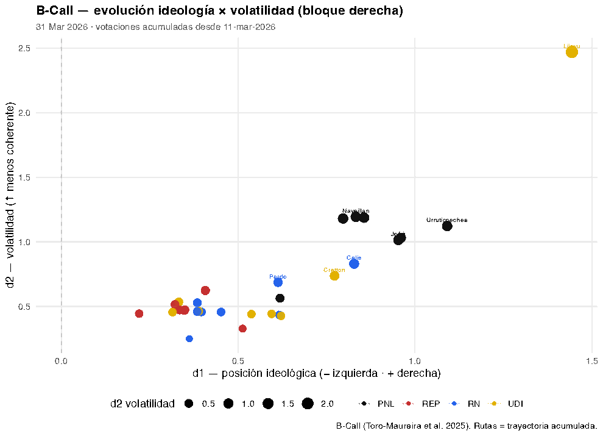
Datos (corte)
Votaciones hasta 2026-08-17. Gobierno Kast desde 2026-03-11.
| Pieza | N |
|---|---|
| Prensa 2026 (filtro Kast) | 38.691 |
| Discursos Kast | 145 |
| Votaciones | 5.906 |
| Votos | 790.317 |
| Proyectos | 612 |
Mensajes -05 |
42 |
Bloque analizado: REP 28 · UDI 13 · RN 11 · PNL 8 diputados.
Boletines: presentado vs promulgado
Agenda formal: mensajes -05
Los boletines -05 son mensajes del Presidente: lo que el gobierno elige presentar. En el canon hay 42 (varios de Boric). Bajo Kast (desde 11-mar-2026) solo tres.
H4: A1 (subsidiariedad / gremios / sociedad civil) = 0 % de esos mensajes.
Qué presentó Kast (y cuánto se votó)
| Boletín | Proyecto | Ingreso | Votos Cámara | ¿Ya es ley? |
|---|---|---|---|---|
| 18137-05 | Contener precio del kerosene (emergencia energética) | 24-mar | 9 | No — sigue en trámite |
| 18216-05 | PDL — reconstrucción y desarrollo económico y social | 22-abr | 120 | No — sigue en trámite |
| 18296-05 | Mayor endeudamiento 2026 | 3-jun | 3 | Sí — publicada en Ley Chile |
El cruce con la BCN busca si el boletín ya tiene una norma promulgada. “Sigue en trámite” = no hay ley publicada (no es un ranking de calidad). Solo el endeudamiento cruzó ese umbral.
Variación: el PDL concentra casi toda la energía legislativa (120 votaciones, cohesión plena). El endeudamiento son 3 votaciones y se estrella en la sala. El kerosene es un mensaje corto de precios. Nada de subsidiariedad / cuerpos intermedios.
¿Qué hay promulgado?
BCN / Ley Chile, con match fuerte (norma ya publicada): 8 normas en toda la base — no son “las leyes de Kast”. Solo una es mensaje -05 de este gobierno: 18296-05.
Las otras siete son boletines más viejos o de otras comisiones (armas, inclusión laboral, IMM, tarifa eléctrica, seguridad escolar, permisos…). El PDL (18216-05), el más votado, aún no es ley en el cruce BCN.
Lectura: “promulgado Kast” ≠ “votado Kast”. Lo que sale en el Diario Oficial es un subconjunto chico y sesgado a fiscalidad/seguridad, no a subsidiariedad.
Watchlist: volumen de votaciones
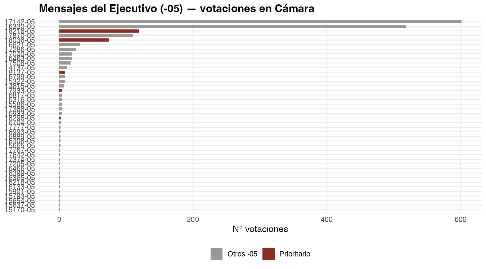
Mensajes del Ejecutivo y número de votaciones
18296-05 — lo único -05 promulgado (y la fisura de sala)
Tres votaciones el 17-jun-2026:
| ID | Resultado | Sí | No |
|---|---|---|---|
| 89178 | Aprobado | 94 | 52 |
| 89179 | Empate 73–73 | 73 | 73 |
| 89180 | Rechazado 72–74 | 72 | 74 |
En el mapa de votos el bloque ya estaba junto (votan parecido). Acá el proyecto se parte en toda la sala, no entre Republicanos y libertarios. Es gobierno vs oposición, no una grieta interna.
18216-05 — PDL: mucho voto, cero promulgación (aún)
120 votaciones; Rice del bloque ~1. H3: no hay grieta REP–PNL. H4: reconstrucción/desarrollo, no cuerpos intermedios. H2: la prensa de la ventana carga ~22 % de C, no A1.
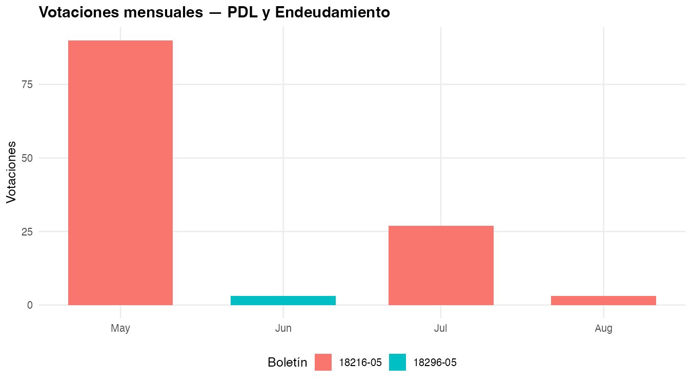
Timeline de prioritarios
Repertorios en los textos de proyecto
Cada barra es un repertorio (no una sigla): economía libre, orden institucional, familia, securitización, etc. Compara todos los proyectos vs. los mensajes del Presidente.
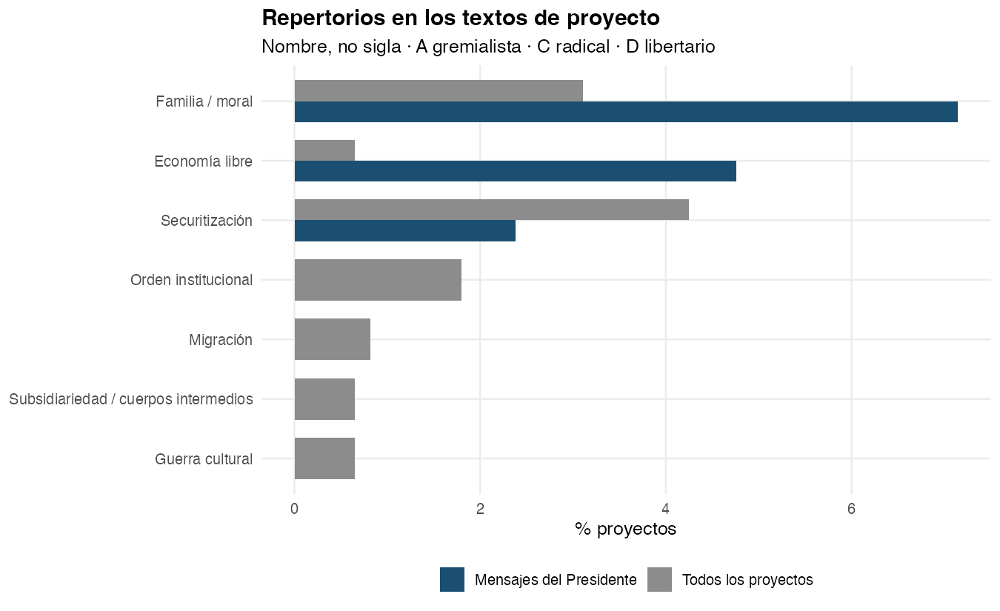
Nombre del repertorio, no código A1/C1
Votos y fisuras
¿La bancada vota junta?
1 = todos del partido votaron igual. 0 = el partido se partió por la mitad. En 2026:
| Partido | Qué tan juntos | Votaciones |
|---|---|---|
| Republicanos | 0.997 | 768 |
| Libertarios | 0.988 | 735 |
| UDI | 0.955 | 790 |
| RN | 0.942 | 786 |

Qué tan juntos votan en el bloque de Kast
¿Republicanos y libertarios votan distinto?
En el 91,8 % de las votaciones eligieron el mismo lado (4 702 votaciones).

Mismo lado: Republicanos y libertarios
La idea de “dos derechas” casi no se ve en el voto. Si hay diferencia, está en indicaciones o en diputados sueltos, no en la bancada.
Dónde sí hay fisura: disruptivos (no el partido)
La fisura no es REP vs. PNL. Es diputados vs. moda del bloque.
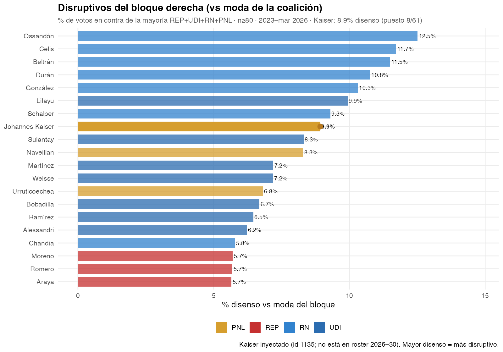
% de votos contra la mayoría REP+UDI+RN+PNL
Kaiser (PNL, id 1135) es el caso de disenso personal, no de bancada. Encaja más con D (límite libertario) que con un cisma partidario.
La fisura no es de partido: es de personas (quién se sale en el mapa) y, en la deuda, de toda la sala. El voto de bancada cierra filas; el mapa dice quién, a veces, no.
Republicanos, mes a mes
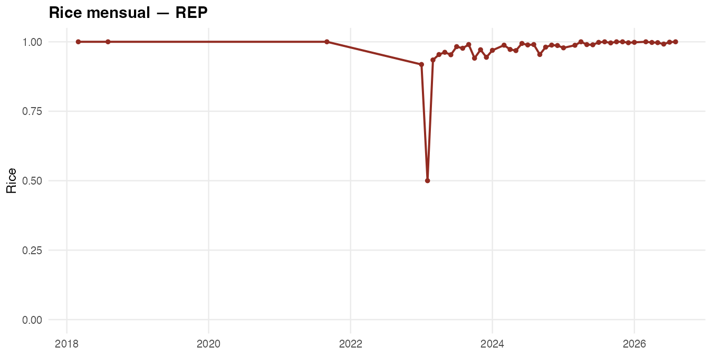
Qué tan juntos votan Republicanos cada mes
Discursos de Kast
El recorte
145 discursos, 11 mar – 30 jul 2026. Se mide el cuerpo oral, no el titular de Presidencia (“S.E. … José Antonio Kast”), que haría “Kast” = 100 %.
Tipo: gira territorial y gestión (regiones, alcaldes, emergencias). No es un corpus de cadena nacional doctrinaria.
Qué palabras nombra
Stopwords extra (p. ej. necesita*, querem*, haciendo, haber): queda el léxico de tema, no el de la oralidad.
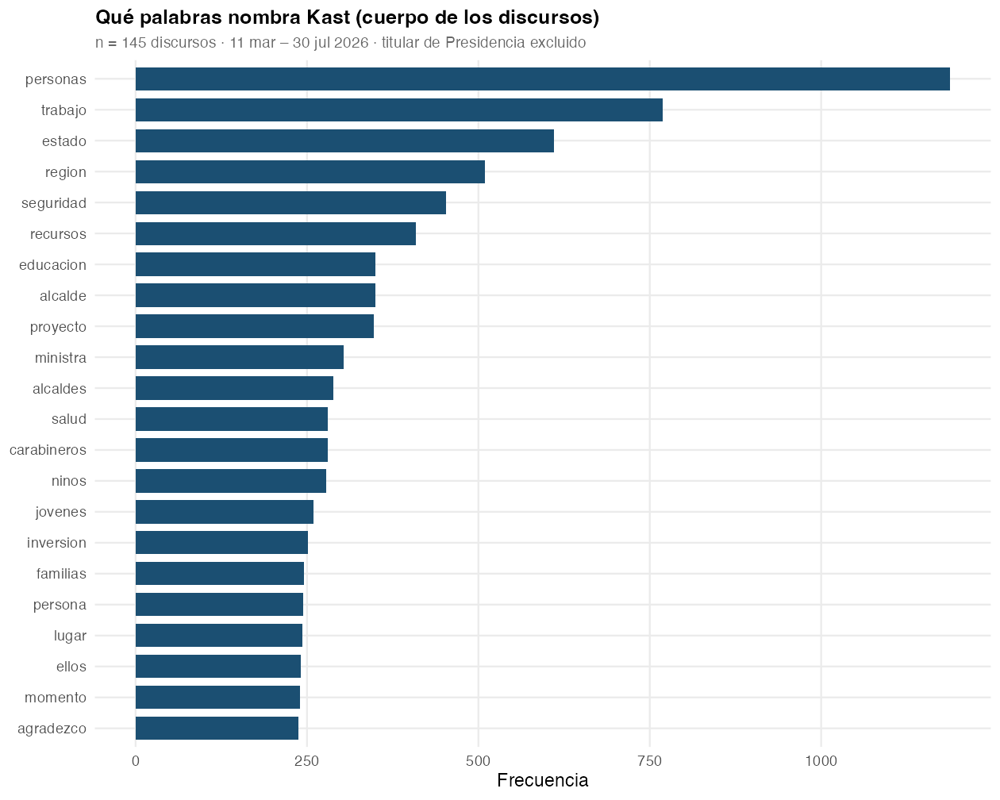
Top palabras en el cuerpo
Personas, trabajo, Estado, región, seguridad. Léxico de gira, no de guerra cultural.
A qué hace alusión
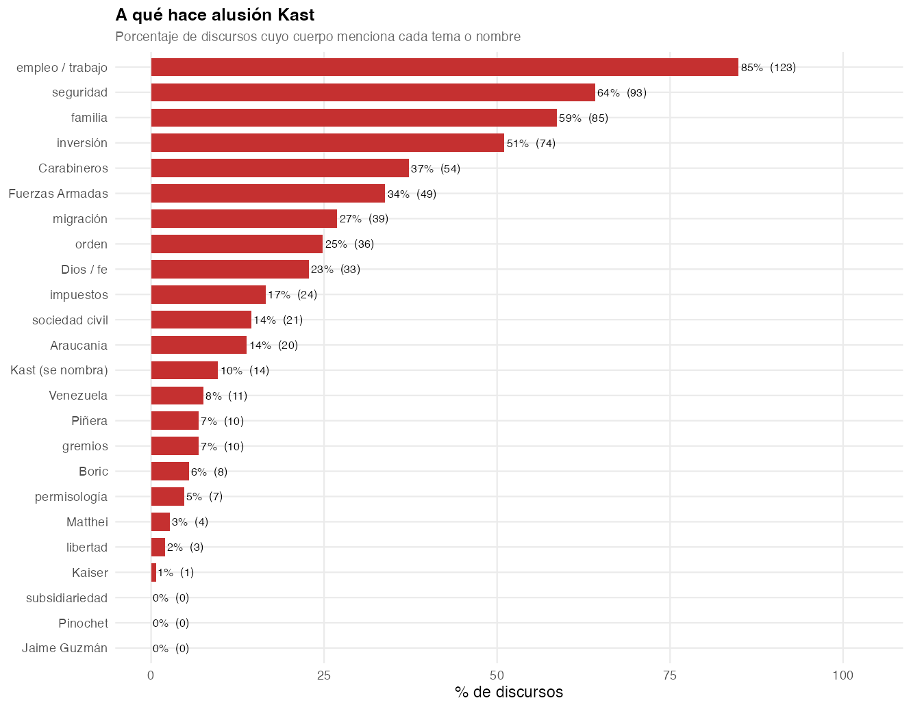
Alusiones en el cuerpo
Seguridad 64 % · familia 59 % · inversión 51 %. Subsidiariedad, Pinochet, Guzmán = 0 %. Kaiser = 1 discurso.
Repertorios en la boca
Mismo alfabeto: A gremialista · B = A junto (no hay barra B) · C radical · D libertario.
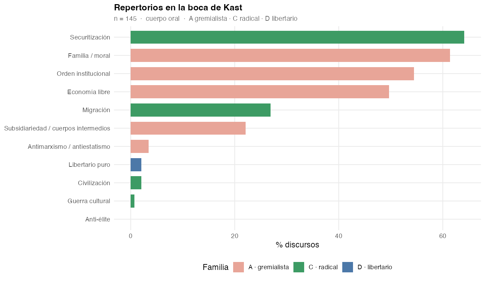
Nombre del repertorio en discursos de Kast
Dominan securitización (C1), familia (A3), orden (A2) y economía libre (A5). Guerra cultural / anti-élite / libertario casi no aparecen. “Cuerpos intermedios” entra por sociedad civil / gremios, no por la palabra subsidiariedad.
Prensa: qué se dice cuando se nombra a la derecha
El recorte (diccionario reforzado)
No usamos el corpus entero (deportes, “seguridad” genérica).
Nombra derecha = Kast, Republicanos, UDI, RN, PNL, Kaiser, LyD, FJG o “la derecha”, oficialismo, gobierno Kast, bancada/coalición de derecha.
| Universo | Notas | % |
|---|---|---|
| Prensa 2026 | 38.691 | 100 |
| Cuando nombra a la derecha | 10.459 | 27 |
Ahí se contrastan H1/H2/H4: qué repertorio acompaña al nombre. Misma prensa; el recorte es temático, no de fuente.
“Libertad” en titulares (2018–26)
En el título es raro (~0,3 % cada año). No es el vehículo principal del repertorio A5; A5 se dispara más con inversión / emprendimiento / propiedad.
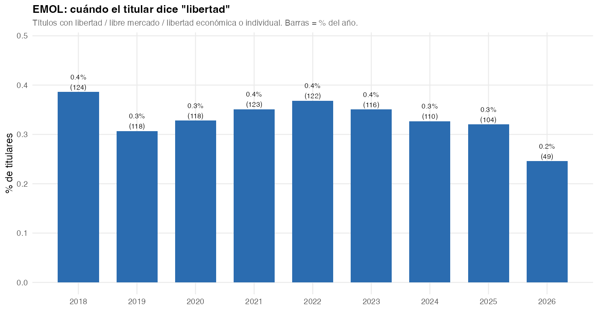
% de titulares con libertad
Libertad junto a la derecha
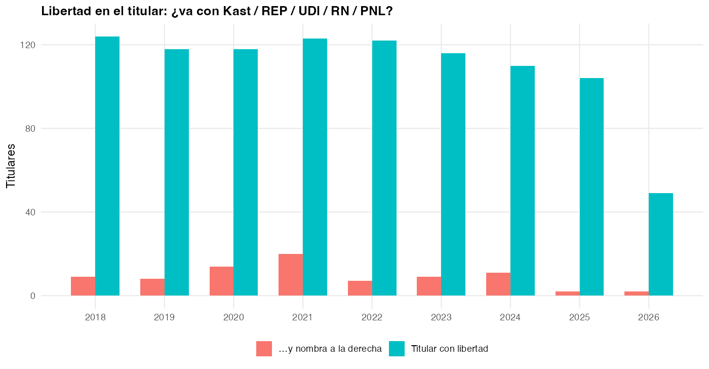
Titulares con libertad vs. los que además nombran Kast/REP/UDI/RN
Entrevistas (titular)
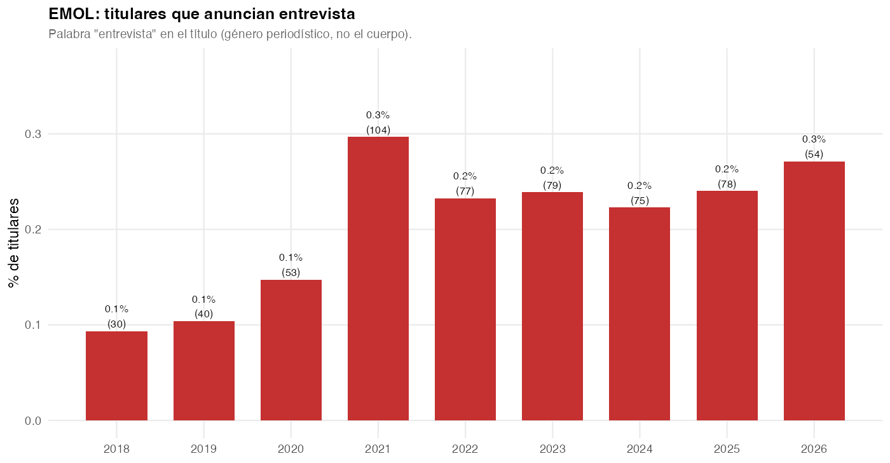
Titulares que anuncian entrevista
Pocas en el título. En 2026 el texto completo (abajo) muestra más: el género vive en el cuerpo.
2026: libertad y entrevistas en el texto
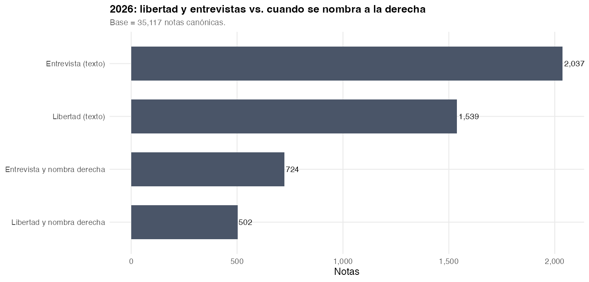
Cruce libertad / entrevista / nombra derecha
Por medio, 2026
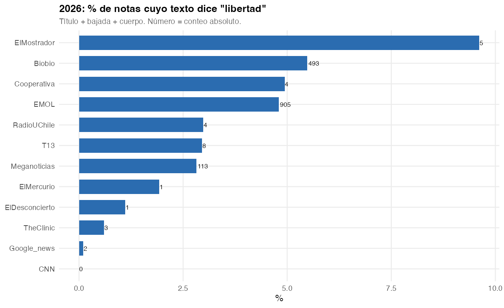
% libertad en el texto, por fuente
Códigos: total vs. cuando se nombra
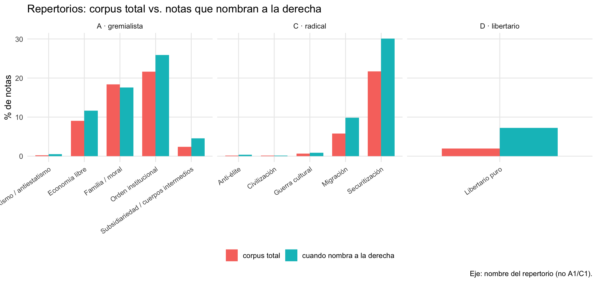
Figure 1
Hipótesis en ese recorte
| subset | H1 A5+A3 | H1 A5+A2 | H2 familia C | H2 híbrido A5+C | H4 A5 sin A1 | A1 |
|---|---|---|---|---|---|---|
| total | 2.0 | 2.7 | 25.1 | 2.7 | 8.5 | 2.4 |
| nombra derecha | 2.9 | 4.4 | 34.1 | 5.2 | 10.7 | 4.6 |
Si H1 fuera mediático, A5+A3 debería subir al nombrar a la derecha. Si sube C y no A1, H2/H4 ganan en prensa y H1 se queda en discursos.
Eco de los boletines Kast (±7 días)
| Evento | Fecha | Boletín | Notas | Discursos | Votos | % C |
|---|---|---|---|---|---|---|
| PDL | 2026-04-22 | 18216-05 | 2589 | 0 | 0 | 21.9 |
| Endeudamiento | 2026-06-17 | 18296-05 | 3146 | 14 | 3 | 23.0 |
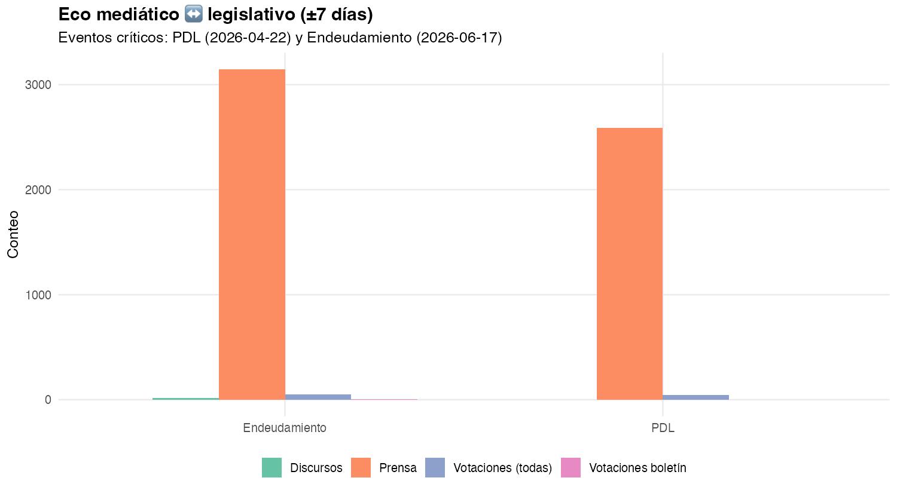
Eco mediático ↔︎ legislativo
Lectura por hipótesis
H1 — Articulación normativa
Se sostiene en discursos; se adelgaza en prensa y proyectos.
- Discursos: seguridad 64 %, familia 59 %, inversión 51 %; no dice subsidiariedad ni Guzmán. Un tercio junta mercado con familia/orden (A5+A3 / A5+A2).
- Prensa: esa co-ocurrencia cae a ~3,5 %.
- Proyectos
-05: el texto de la agenda es fiscal/reconstrucción, no “mercado como moral”.
El neogremialismo aparece como gramática presidencial, no como gramática de la ley ni de la noticia.
H2 — Radicalización
El repertorio radical (C: seguridad, migración, cultura) vive en la noticia; casi no en la boca de Kast.
- En la prensa 2026, ~22 % de las notas traen C. Si la nota nombra a Kast o a la derecha, esa cifra sube.
- En los discursos de Kast, el radicalismo sin familia/orden/mercado (C sin A) es solo 9 %.
- Textos que juntan mercado y C en la misma pieza: ~2 %. Casi no hay fusión explícita.
C no es “solo Twitter”. Pero tampoco reemplaza al núcleo gremialista en Presidencia. Medios radicalizan; Kast no.
H3 — REP vs PNL
Los votos no arman dos derechas. El mapa no los sentó: salen de cómo votaron.
- Republicanos y libertarios coinciden en el 91,8 % de las votaciones. Casi nunca se parten.
- En el mapa quedan igual de a la derecha. Renovación Nacional, más al centro.
- Quienes se salen son nombres, no partidos: en la UDI Hube y Lilayu; en los libertarios Karlezi; en Republicanos, Ross.
H4 — Selección liberal-individual
La evidencia más limpia, también en lo promulgado.
- Kast presentó 3 mensajes
-05; 1 promulgado (endeudamiento). El PDL (120 votos) no es ley en BCN. - A1 = 0 en esos mensajes. Al nombrar a la derecha en prensa, A1 sigue bajo.
Mapa de hallazgos
DISCURSOS PRENSA PROYECTOS / VOTOS
H1 mercado+valores fuerte débil (3.5%) débil (texto fiscal)
H2 repertorio C bajo (9% C-sin-A) fuerte (~22%) eco en ventanas PDL
H3 REP ≠ PNL — — no: 91.8% acuerdo
H4 sin A1 fuerte (42%) A1 escaso 0% en 42 mensajes -05Tesis empírica corta: el neogremialismo 2026 es discursivo y selectivo. La ley y el voto unifican al bloque; la prensa radicaliza el entorno; los boletines -05 no reconstruyen subsidiariedad.
Cuatro pistas, una frase cada una
- Mapa de votos. Los votos (no nosotros) dejan una nube derecha. La fisura es quién se sale, no Republicanos vs libertarios.
- Boletines. Presentó kerosene, PDL y deuda. Promulgó la deuda. El PDL se vota mucho y no sale.
- Discursos. Trabajo, seguridad, familia, inversión. No nombra a Kaiser (1 vez, 2021). No dice subsidiariedad.
- Prensa. Si la nota nombra a Kast/la derecha, sube el repertorio radical (C), no el cruce mercado+familia (H1). En 2026 Kast está en 1 de cada 10 titulares; Kaiser, después del pico 2025, casi no aparece.
Bosquejo
El neogremialismo es discursivo y performativo: se dice y se escenifica por encima de lo que decide la Cámara.
- En Presidencia hay gramática A/B (familia, orden, mercado) y seguridad. En el hemiciclo el bloque vota junto; no hay dos derechas.
- Lo que se presenta y lo que se promulga es fiscal / reconstrucción, no subsidiariedad ni cuerpos intermedios.
- La prensa, al nombrar a la derecha, carga C (radical), no la articulación neogremialista.
La Cámara unifica; el discurso distingue. El neogremialismo 2026 todavía no es una regla de voto ni de ley: es una performance presidencial.